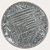

tellurium

Definition: Tellurium is a chemical element with the symbol Te and atomic number 52. It is a brittle, mildly toxic, rare, silver-white metalloid. Tellurium is chemically related to selenium and sulfur, all three of which are chalcogens. It is occasionally found in native form as elemental crystals. Tellurium is far more common in the Universe as a whole than on Earth. Its extreme rarity in the Earth's crust, comparable to that of platinum, is due partly to its formation of a volatile hydride that caused tellurium to be lost to space as a gas during the hot nebular formation of Earth.Tellurium-bearing compounds were first discovered in 1782 in a gold mine in Kleinschlatten, Transylvania (now Zlatna, Romania) by Austrian mineralogist Franz-Joseph Müller von Reichenstein, although it was Martin Heinrich Klaproth who named the new element in 1798 after the Latin tellus 'earth'. Gold telluride minerals are the most notable natural gold compounds. However, they are not a commercially significant source of tellurium itself, which is normally extracted as a by-product of copper and lead production.
Source: Wikipedia
Wikipedia Page
Wikidata Page